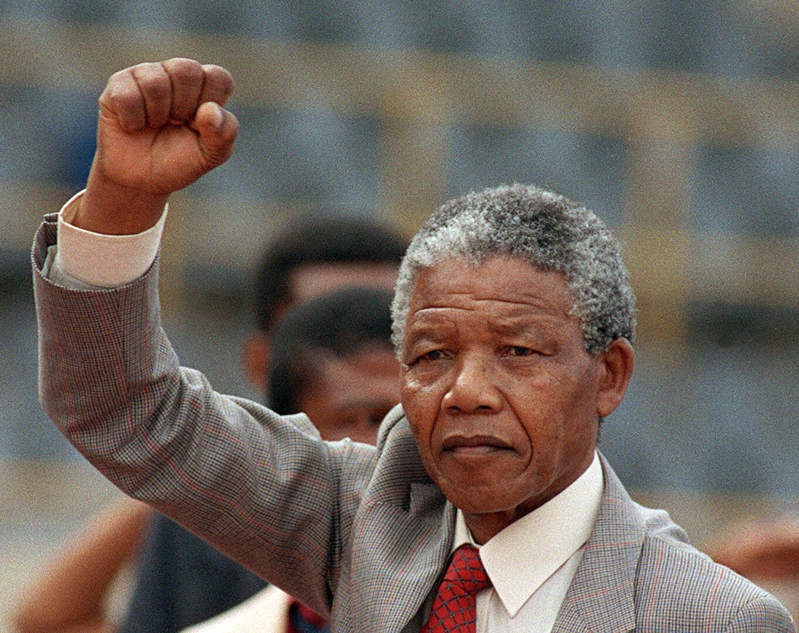

Nelson Mandela
Clique para ver mais
Nelson Mandela foi um líder sul-africano, advogado e ativista, que se tornou símbolo mundial da luta contra o apartheid e pela igualdade racial. Após passar 27 anos na prisão, Mandela se tornou o primeiro presidente negro da África do Sul e desempenhou um papel fundamental na reconciliação nacional e no combate às desigualdades raciais. Seu compromisso com a justiça e a paz lhe garantiu o Prêmio Nobel da Paz em 1993.